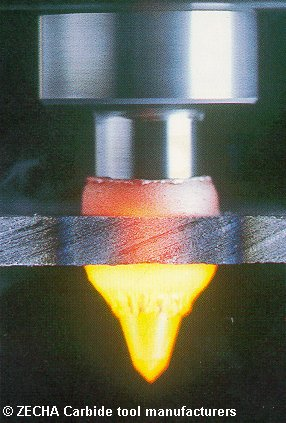

LMP>Linhas de Pesquisa>FURCON>Furação Por Escoamento
OBJETIVOSNeste trabalho são estudados os fundamentos do processo de furação por escoamento através da análise de resultados de ensaios verificando a influência de diversos fatores na otimização do processo. PROCEDIMENTOSA bucha formada pelo processo de furação por escoamento pode
ser posteriormente roscada e utilizada em substituição a aplicações
usuais, como porcas soldadas e porcas rebitadas. RESULTADOSAvaliam-se os resultados de trabalho pela forma e qualidade das rebarbas, tamanho da região termomecanicamente afetada e pelo desgaste da ferramenta. Finalmente todos esses fatores devem ser avaliados em termos de produtividade e custos para verificar, ou não, a viabilidade econômica do processo. As principais vantagens desse processo são:
 |
| Contato: FURCON Walter Lindolfo Weingaertner Prof. Dr.-Ing |
Última Atualização 21.06.2006 |